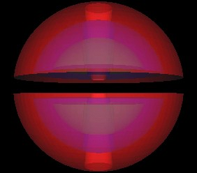
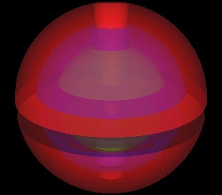
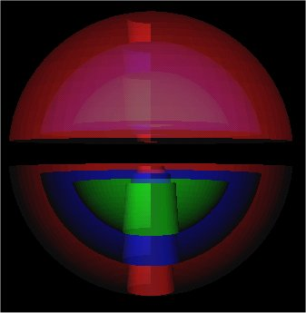
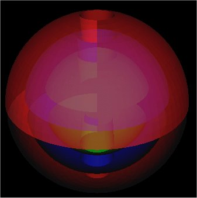
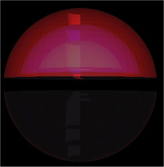

I am trying to program 3 torus-like objects, one within the other, in Java 3D, with a transparency setting such that you can see all 3 objects.
Here is an image of what I mean.
|  |  |
| Using 3,168 QuadArrays. | |
Here is the current code. (Not the code that porduced the above images, but is the code that produced the bottom images and which clearly shows the problems I am having.)
There are 3 shells: 1) Outer in red, 2) Middle in blue, 3) inner most in green. Each "shell" consists of a top torus and a bottom torus. In what follows, these objects are coded as 3 quadArrays: 1 quadArray for the outer top/bottom torii, 1 for the middle top/bottom torii, 1 for the inner most torii. These objects do not intersect each other; they are completely contained one in the other.
The problems are clearly seen in these next 2 images.
|  |
| Using 3 QuadArrays. Top and Bottom not the same?? |
|  |
| Using 3 QuadArrays. Left and Right not the same?? |
The code includes:
SU.getViewer().getView().setDepthBufferFreezeTransparent(true);
SU.getViewer().getView().setTransparencySortingPolicy(View.TRANSPARENCY_SORT_GEOMETRY);
and in the appearance, the polygonattributes includes
PolygonAttributes.CULL_BACK
I put each of the 3 quadArrays in a single OrderedGroup so that the inner one gets rendered 1st, middle 2nd, outer last.
OrderedGroup OBG = new OrderedGroup();
OBG.addChild(Torus3); // render this one 1st
OBG.addChild(Torus2); // render this one 2nd
OBG.addChild(Torus1); // render this one 3rd
I thought the top/bottom problem might be because I had the bottom normals pointing in the wrong direction. Here is an image with the bottom normals pointing in the opposite direction:
|  |
| Bottom half normals reversed. |
so I guess I had the normals pointing in the correct direction after all.
So what else could the problems be a result of??
If anyone has alternative coding suggestion, please let me know.